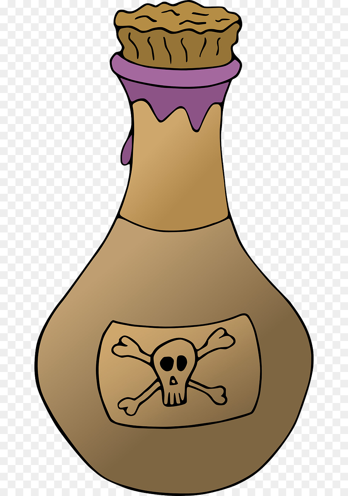

Search for a person or Act
Romeo appears in this book for the first time near the end of Act 1 Scene 1. At this time, he declared his love for a girl named Rosaline. she did not last long though as he would soon fall for Juliet.
In this scene, Romeo can be found talking with friends. When asked if he can read, he reads the Capulets invitation for a party so that the servant can find all the correct people. When Romeo finishes, he and his friends ask if they can go to the party too. The servant says yes.
Romeo does not appear in this scene.
In this scene, Romeo is again talking to his friends. When he has doubts about going to the party, his
friends are forced to convince him to go to the party. He eventually agrees to go. (He'll be glad he
did!)
You could say this is the end of the real introduction. The scene starts with Romeo and his friends heading to the party and goofing off, telling jokes to each other. After a bit, Romeo lays eyes on Juliet. It was love at first sight. LITERALLY!!! He goes and talks to her and before no time at all, they're kissing. This really get's the ball rolling in the book as the two won't live happily ever after.
This scene is very short. Romeo talks to the audience at first and then hear his friends. He runs, and they do not see him. They call out to him, but he doesn't come. They joke about his absence.
In this scene, Romeo and Juliet talk together for the first time in private. They discuss getting married and how to communicate the answer they get after Romeo asks Friar Lawrence.
Romeo goes to Friar Lawrence in this scene and persuades him to marry Romeo and Juliet. The Friar doesn't like it, but agrees to do it.
Romeo meets Juliets Nurse for the first time. He is with his friends and they start teasing Nurse so he bceomes more serious, especially after they leave. Romeo tells Nurse to tell Juliet that he is waiting for her at Friar Lawrences Cell.
Romeo is merely discussed by Juliet and her Nurse in this scene.
In this scene, Romeo and Juliet get married. The book doesn't go through the marriage at all but the next time we see Romeo, and the next time we see Juliet, both give hints of being married. This scene ends the Act.
This is possibly the most important scene so far in this whole book. It is the first twhole seen in which Romeo and Juliet are married but it is also when tragedy strikes. A fiesty young man named Tybalt, of the house of Capulet, saw Romeo at the party he had gone to to meet Juliet. As he had not been allowed to fight Romeo then and there, he sends a letter to Romeo which appears in this scene. The letter is challenging Romeo to a fight, a duel. His friends recieve the letter and, eager to be active, accept the duel themselves. During the duel, Romeo arrives and steps between the two people. Tybalt stabs Romeo's friend Mercutio from under Romeo's arm and runs. Romeo cleans up the mess before Tybalt returns, and this time, Romeo duels Tybalt. Tybalt dies. Romeo then leaves and the citizens of Verona enter. They see Tybalt lying there and call the Prince. The Prince asks what happens and, as Romeo was avenging someone, he was banished instead of killed.
Romeo is merely discussed by Juliet and her Nurse.
Romeo is hiding in Friar Lawrences Cell. He is distressed by what he has done and is telling this to the Friar. Juliets Nurse then comes and tells Romeo that Juliet has accepted this and that she is more sad that Romeo is banished than that Romeo killed Tybalt. By the time the scene ends, Romeo is happy again.
Romeo does not appear in this scene.
Romeo is talking to Juliet for the last time before he has to leave the city. It is interupted by Juliet's Nurse who warns them that Capulet and Lady Capulet are coming. Romeo then exits the scene. This is the last time Romeo and Juliet will ever speak to each other.
Romeo is discussed by Juliet and Friar Lawrence.
Romeo is mentioned when Juliet is alone in her room.
Romeo does not appear in this scene.
Romeo does not appear in this scene.
Romeo is by himself, waiting for his servant to bring him news from Verona. When he arrives, Romeo immediately asks about Juliet. The servant tells how she is dead and Romeo is in despair. Romeo then leaves and enters an apothecary where the poor man sells him some drugs that will kill the drinker instantly. Romeo plans on going to Juliets tomb and dying beside Juliet.
spacing
spacing
Romeo is merely discussed by Friar John and Friar Lawrence. We find out how Friar Lawrence's letter explaining everything to Romeo has never arrived.
This is the last scene in the book. It is in a church graveyard. Paris hears Romeo coming and hides in the bushes. Romeo enters, tells his servant to go, and opens Juliets tomb with the intention of drinking his deadly drink. Paris confronts him and they fight. Romeo kills Paris, lays him in the tomb, and drinks the poison. From here, Romeo is merely discussed.
To read the book, go to This PDF
For some fun facts on Romeo and Juliet, and Shakespeare, go to Fun Facts | Romeo and Juliet